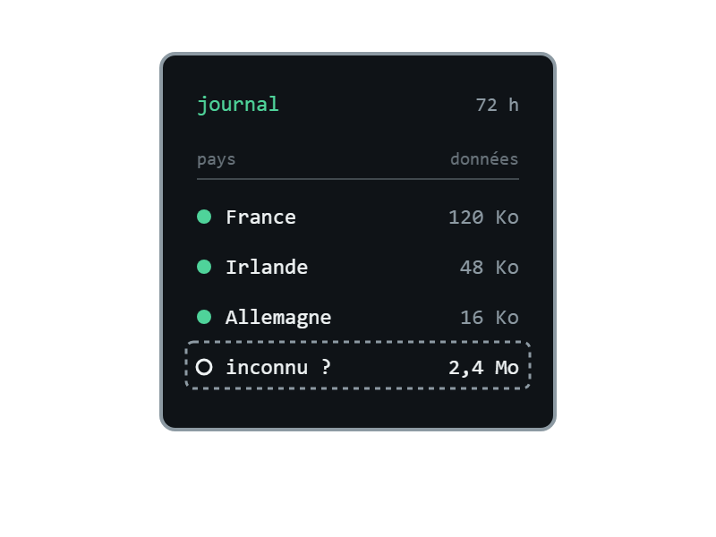
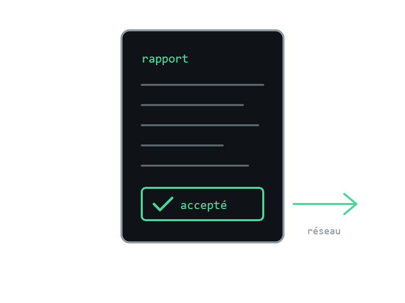

OBSIDIA
Un noir profond pour révéler ce que vos objets cachent.
Voyez ce que vos objets cachent.
Un noir profond pour révéler ce que vos objets cachent.
Voyez ce que vos objets cachent.
Un boîtier qui met en quarantaine vos objets et qui trace leur communication.
On branche l'objet sur Obsidia, pas sur la box.

Pendant 72 h, Obsidia regarde à qui il parle.

Un rapport en français et un verdict.

L'obsidienne est un verre volcanique noir. Coupée très fine, elle laisse passer la lumière.

Le logo représente ce que fait Obsidia : l'objet est mis à l'écart, on l'observe, puis on décide s'il peut entrer sur le réseau.
Un carré aux coins arrondis, ouvert sur le côté droit. C'est la boîte, le sas où l'objet attend.
Un hexagone noir au centre, taillé comme un éclat d'obsidienne. C'est l'objet connecté qu'on surveille.
Placé dans l'ouverture du cadre. C'est le verdict : l'objet peut entrer.
Le nom « obsidia » est écrit en minuscules et en gris clair, pour que le symbole reste l'élément principal. Le logo s'utilise sur fond sombre.
Vos objets font des requêtes, Obsidia mène l'enquête.
On achète le boîtier une fois. Ensuite, on choisit sa licence : gratuite ou avec suivi.
149 € TTC
Paiement unique. Garantie 2 ans.
Gratuite
incluse avec le boîtier
35 € / an
sans engagement